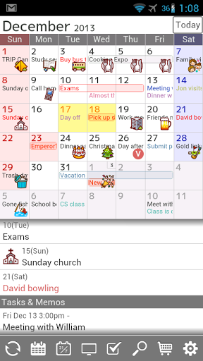
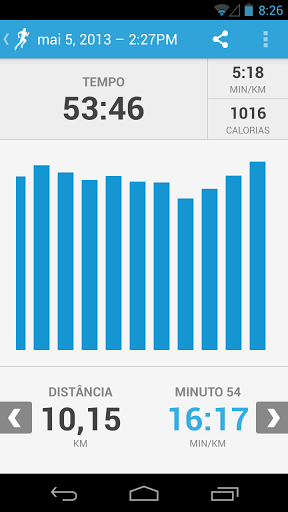
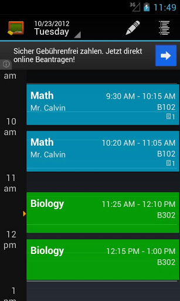

Dicas de aplicativos gratuitos(){
Dicas
Jorte

Jorte
Jorte é uma agenda com aparência de uma agenda real de papel, projetado para ser um organizador pessoal de bom design e fácil uso.
O aplicativo tem a função de customizar sua agenda de acordo com o seu gosto, com ele é possível escolher cores, fonte, tamanho das letras e ícones de acordo com o seu estilo.
Há a opção de visualizar a agenda como mensal ou semanal.
Você pode visualizar eventos importantes, que aparecem numa lista abaixo do calendário em vermelho.
De acordo com o seu estilo, você pode escolher o dia inicial da semana, atualizar a lista de feriados ou inseri-los manualmente.
Há também a possibilidade de criar listas de tarefas com inúmeros itens que podem ser marcados como concluídos e reorganizados de acordo com sua necessidade.
Também é possível sincronizar sua agenda com Google Calendar.
Run Keeper

Run Keeper
Run Keeper é um monitorador de atividade física.
Primeiramente é necessário escolher o tipo de atividades que pode ser corrida, caminhada, pedalada, natação, remos, dentre vários outros.
Depois você escolhe suas metas, pode ser pra perder peso, correr maratona, condicionamento físico dentre outros. Com isso ele criará uma rotina de exercícios para você que deverá ser seguido.
Durante a realização da atividade física é criada estatísticas detalhadas sobre o seu ritmo, distância, tempo e calorias queimadas.
O aplicativo emite sinais sonoros de tempos em tempos para informar sobre como está o seu progresso na atividade.
É possível tirar fotos durante o percurso sem sair do aplicativo e postá-las diretamente nas redes sociais.
O aplicativo fornece a opção de divulgar para seus amigos o mapa de suas rotinas de exercícios e corridas em tempo real.
Ele avisa quando você tem alguma atividade física a ser feita no dia.
My Class Schedule

My Class Schedule
My Class Schedule é um aplicativo para a organização dos estudantes.
Com ele é possível adicionar disciplinas, a duração das mesmas, o professor e a sala.
O aplicativo mostra o seu calendário de aulas por dia ou semana.
Para cada disciplina é possível adicionar provas, tarefas, atividades e cadastrar suas notas para que ela possa calcular sua média final.
Ele silencia seu celular automaticamente durante as aulas.
Emite notificações quando há uma tarefa, prova ou atividades.
}